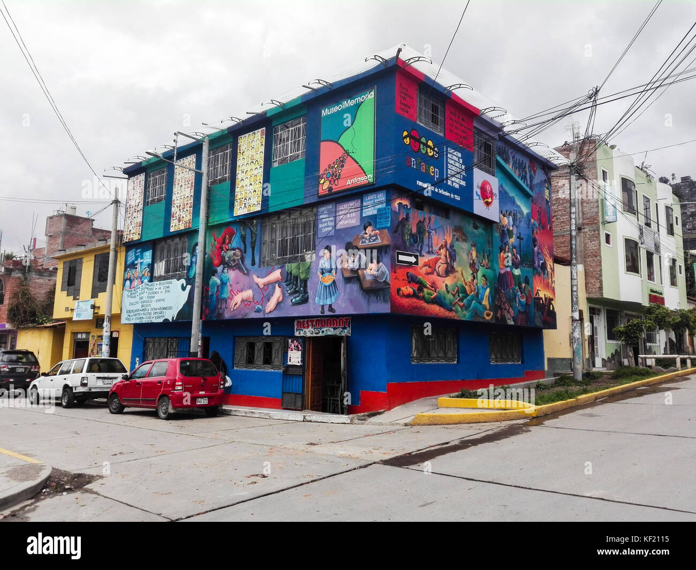
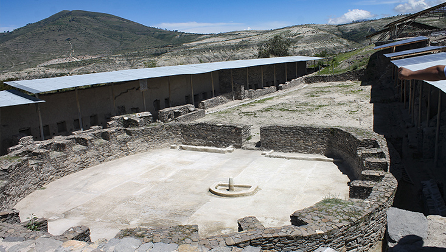
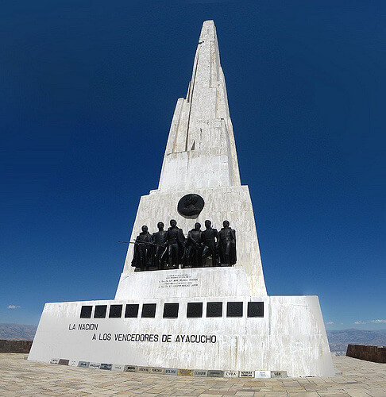

Orgullosa me siento de ser Huamanguina. Huamanga se ubica a la zona sur central de Perú. Lo más sorprendente son sus hermosas iglesias coloniales. La Plaza de Armas alberga la Catedral de Ayacucho del siglo XVII, siendo una de las ciudadas de Perú más antiguas. También se ubica la Universidad Nacional de San Cristóbal de Huamanga.

Dentro de la ciudad encontramos al Arco del Triunfo de Ayacucho o Arco de San Francisco, es un homenaje para todos los que lucharon y murieron durante la Revolución Francesa y las guerras napoleónicas. Fue construido por orden de Napoleón Bonaparte para conmemorar la victoria en la batalla de Austerlitz, y se inauguró 30 años después, el 29 de julio de 1836. Lo hicieron bajo un estilo barroco andino. Se ubica jirón 28 de Julio cuadra 3 junto a casas de estilo colonial-virreinal, aun que también puedes ir por el parque central.

Si quieres ir a un museo, puedes ir a el Museo de la Memoria, se ubica en Jirón Libertad 1365. La entrada cuesta solo s/3.00. El museo muestra la historia dolorosa del Perú. Espacio destinado a dar visibilidad a las violaciones a los DDHH cometidas por el Estado entre 1973 y 1990.
Ahora pasemos a el Complejo Arqueológico Wari, como dice su nombre perteneció a la cultura Wari, siendo una ciudad prehispánica y antigua. La ciudad esta hecho de piedra y barro.
Para comenzar nuestro recorrido a los alrededores la ciudad, debemos empezar por el Santuario histórico de la Pampa de Ayacucho o mejor conocido como el obelisco de la Pampa de Ayacucho. Esta tiene un historia relevante, ya que representa la lucha por la independencia del Perú y de América. También hablemos de los rostros tallados en esta, que fueron personas que encabezaron la batalla y tenemos a: Antonio José de Sucre, Agustín Gamarra, José María Córdoba, José de La Mar, Jacinto Lara y William Miller.
 Volver
Volver